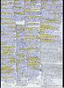
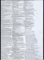
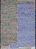
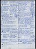
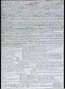
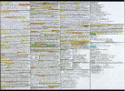

|
|
A distributed system consists of several independent computers that communicate with each other over a network. Different distributed system architectures exist in the computer science. The most popular architecture is the client-server model. But especially in the parallel computing field, exist among others, cluster computing, grid computing, peer-to-peer (P2P) and cloud computing.
The aim of this course is to discuss the fundamentals of Cluster Computing, Grid Computing, Peer-to-Peer (P2P), Cloud Computing and MapReduce/Hadoop as well as Web Services, Cryptography and Steganography. Practical exercises are an important part of this course because they are essential for the understanding of these technologies.
| Date | Time | Room | Event | Topics |
| 27.03.2014 | 11:45-13:15 | 1-401 | Lecture | Discussion of slide set 1 |
| 03.04.2014 | 11:45-13:15 | 1-401 | Lecture | Discussion of slide set 2 |
| 04.03.2014 | 10:00-11:30 | 1-401 | Lecture | Discussion of slide set 3 |
| 10.04.2014 | 11:45-13:15 | 1-401 | Lecture | Discussion of slide set 3 |
| 11.04.2014 | 10:00-11:30 | 1-401 | Lecture | Discussion of slide set 4 |
| 17.04.2014 | 11:45-13:15 | 1-401 | Lecture | Discussion of slide set 4 + 5 |
| 18.04.2014 | Good Friday / Karfreitag | |||
| 24.04.2014 | 11:45-13:15 | 1-401 | Lecture | Discussion of slide set 5 |
| 25.04.2014 | 10:00-11:30 | 1-401 | Lecture | Discussion of slide set 6 |
| 01.05.2014 | Labor Day / Tag der Arbeit | |||
| 02.05.2014 | 10:00-11:30 | 1-401 | Lecture | Discussion of slide set 6 + 7 |
| 08.05.2014 | 11:45-13:15 | 1-401 | Lecture | Discussion of slide set 7 |
| 09.05.2014 | 10:00-11:30 | 1-401 | Lecture | Discussion of slide set 7 + 8 |
| 15.05.2014 | 11:45-13:15 | 1-401 | Lecture | Discussion of slide set 9 |
| 16.05.2014 | 10:00-11:30 | 1-401 | Lecture | Discussion of slide set 10 |
| 22.05.2014 | 11:45-13:15 | 1-401 | Lecture | Discussion of slide set 11 |
| 23.05.2014 | 10:00-11:30 | 1-401 | Lecture | Discussion of slide set 11 |
| 29.05.2014 | Ascension Day / Christi Himmelfahrt | |||
| 12.06.2014 | 11:45-13:15 | 1-401 | Lecture | Discussion of slide set 12 |
| 19.06.2014 | Corpus Christi / Fronleichnam | |||
| 03.07.2014 | 11:45-13:15 | 1-401 | Lecture | Repetition of the contents of slide set 1-12 |
| 15.07.2014 | 14:00-15:30 | 8-104 | Exam | The exam covers the slide sets 1-12 and the exercise sheets 1-11 |
| 25.11.2014 | 12:00-13:30 | 1-131 | Exam | The exam covers the slide sets 1-12 and the exercise sheets 1-11 |
| Slide sets | Languages | Topics | |
| Slide set 1 | Organisational information, Client-Server | ||
| Slide set 2 | Fundamentals, Laws and Limitations, Parallel Computers | ||
| Slide set 3 | Cluster Computing | ||
| Slide set 4 | Peer-to-Peer | ||
| Slide set 5 | Grid Computing | ||
| Slide set 6 | Cloud Computing, Services and Concepts, Opportunities and Risks | ||
| Slide set 7 | Amazon Web Services (EC2, EBS, ELB), Google Compute Engine, HP Cloud Compute | ||
| Slide set 8 | IBM Smart Cloud Enterprise, Amazon Web Services (S3) und Google Cloud Storage | ||
| Slide set 9 | Platform Services (Google App Engine) | ||
| Slide set 10 | Private Infrastructure Services (IaaS), Private Platform Services (PaaS) | ||
| Slide set 11 | MapReduce/Hadoop | ||
| Slide set 12 | Web Services | ||
| Slide set 13 | Cryptography (fundamentals, symmetric key cryptography) | ||
| Slide set 14 | Cryptography (asymmetric key cryptography, key exchange, hash functions) | ||
| Slide set 15 | Steganography, copyright traps and digital watermarking | ||
| Exercise sheets | Languages | Topics | |||
| Exercise sheet 1 | Topics of slide set 1 | ||||
| Exercise sheet 2 | Topics of slide set 2 | ||||
| Exercise sheet 3 | Topics of slide set 2 | ||||
| Exercise sheet 4 | Topics of slide set 3 | ||||
| Exercise sheet 5 | Topics of slide set 4 | ||||
| Exercise sheet 6 | Topics of slide set 5 + 6 | ||||
| Exercise sheet 7 | Topics of slide set 7 | ||||
| Exercise sheet 8 | Topics of slide set 7 + 8 | ||||
| Exercise sheet 9 | Topics of slide set 9 + 10 | ||||
| Exercise sheet 10 | Topics of slide set 11 | ||||
| Exercise sheet 11 | Topics of slide set 12 | ||||
| Exercise sheet 12 | Topics of slide set 13 + 14 + 15 | ||||
| Semester | Exams | Time limit | University | Sample solutions | ||
|---|---|---|---|---|---|---|
| WS1415 | 90 Minuten | FH Frankfurt | ||||
| SS2014 | 90 Minuten | FH Frankfurt | ||||
| WS1314 | 90 Minuten | FH Frankfurt | ||||
| WS1112 | 60 Minuten | HS Mannheim | ||||
| SS2011 | 60 Minuten | HS Mannheim | ||||
| WS1011 | 60 Minuten | HS Mannheim | ||||
| SS2010 | 60 Minuten | HS Mannheim | ||||
| Result of the evaluation |
As auxiliary material, the students were allowed to use a self prepared, single sided DIN-A4 sheet in the exam. Only handwritten originals were allowed, but no copies. This page contains a selection of the sheets. Some of them are true works of art.
     The best way to reach me is via email: christianbaun@fb2.fh-frankfurt.de
|
Prof. Dr. Christian Baun Fachhochschule Frankfurt am Main Faculty of Computer Science and Engineering Last updated: November 14th 2014 |
|